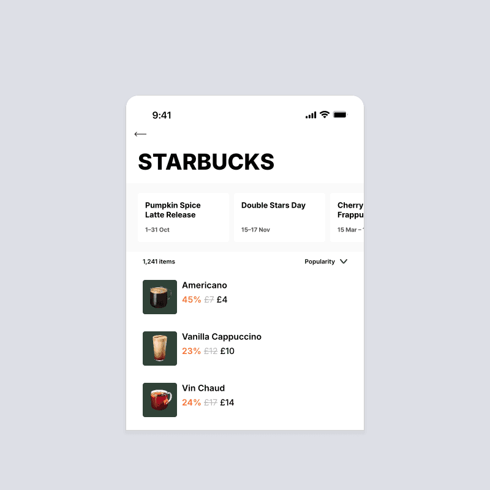
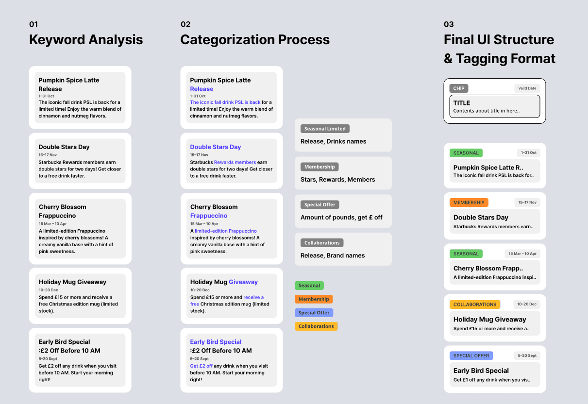

기프티콘을 사러 온 사용자에게, 브랜드 소식을 소개하다.
니콘내콘은 기프티콘을 사고파는 커머스 서비스야. 이 프로젝트는 브랜드별 상품 목록 안에 놓인 소식 영역을 개선하는 일이었어.
- 비즈니스 목표
- 브랜드 소식에 대한 관심을 확인하고, 향후 커뮤니티 확장 가능성을 탐색하기.
- 시작 조건
- 상품을 구매하러 온 사용자의 기존 탐색 흐름 안에서 소식을 제공해야 했어.
- 진행 중 확인한 제약
- 크롤링으로 수집한 소식은 기존 데이터 형식으로 자동 분류하기 어려웠어.
구매 흐름을 유지하면서, 브랜드 소식을 살펴볼 이유를 어떻게 보여줄 수 있을까?
회사는 브랜드 소식에 대한 관심을 살펴보며 커뮤니티 확장 가능성을 탐색하고 있었어. 하지만 상품을 찾던 사용자가 배너를 눌러 별도 게시판으로 이동해야 했고, 시작 CTR은 약 2%였어.
상품을 보던 사용자에게 게시판 이동을 요구했어.
회사는 거래 중심의 서비스에서 브랜드 커뮤니티로 확장할 가능성을 살펴보고 있었어.
그 첫 단계로 상품 목록에 브랜드 소식을 넣었지만 CTR은 약 2%였어. 사용자는 이미 카테고리와 브랜드를 선택해 상품을 찾고 있었고, 배너를 누르면 소식 게시판으로 이동했지.
그래서 질문을 바꿨어. 상품을 찾는 흐름 안에서, 브랜드 소식을 살펴볼 이유를 클릭 전에 보여줄 수 있을까?
기존 경로에서 본 문제
상품 탐색과 소식 탐색은 다른 목적이야. 이 맥락 전환이 낮은 클릭률의 원인이라고 확정한 것은 아니지만, 배너의 크기 외에 살펴볼 문제로 봤어.
게시판에 가기 전, 현재 화면에서 탐색하게 했어.
클릭을 요구하기 전에 소식의 내용을 먼저 보여주기로 했어.
캐러셀은 현재 상품 화면에서 여러 소식을 미리 살펴보는 방식이었어. 브랜드명을 크게 해 소식이 어느 브랜드에 속하는지 구분하고, 카드 제목에는 프로모션 내용을 드러냈어.
브랜드 → 소식의 내용 → 상세 확인 순서로 정보를 읽도록 구성했어. 첫 개선 이후 CTR은 약 5%로 관측됐어.

첫 개선 후 클릭률은 약 2%에서 5%로 올랐어.
CTR · 공통 축 0–10% · 막대는 0에서 시작
클릭 전에 소식을 살펴볼 수 있게 바꾼 뒤 관측된 결과였어. 그런데 클릭 외의 행동까지 살펴보니, 더 확인할 부분이 있었어.
탐색 20%, 클릭 5%. 다음 가설을 세웠어.
탐색 행동은 있었어. 하지만 클릭하지 않은 이유까지 알 수는 없었어.
캐러셀 탐색 비율은 약 20%, 클릭률은 약 5%였어. 이 차이만으로 클릭하지 않은 이유를 단정하지는 않았어.
대신 클릭 전에 콘텐츠의 가치를 더 잘 알아볼 수 있다면?이라는 가설로 다음 개선을 진행했어.
두 수치를 직접 전환율로 계산하지 않은 이유
스와이프와 클릭은 서로 다른 행동이고, 분모와 집계 기준도 현재 확인되지 않았어. 따라서 20% 중 5%가 클릭했다거나 나머지가 이탈했다고 해석할 수 없어.
서로 다른 행동 지표.
탐색에서 클릭으로의 이탈률을 뜻하지 않음.
상호작용 20% 안에 클릭 5%가 포함돼 있었어.
전체 이용자의 20%가 소식 영역과 상호작용했고, 이 안에 클릭한 5%가 포함돼 있었어. 다음 개선에서는 소식의 종류와 가치를 클릭 전에 알아보기 쉽게 만드는 데 집중했어.
클릭 5% · 클릭 없이 상호작용 15% · 집계된 상호작용 없음 80%
전체 이용자 기준, 한 칸 = 1%. 행동의 포함 관계를 보여주며, 클릭하지 않은 이유나 행동 순서를 증명하지는 않아.
검토 메모: 앞에 남겨둔 “분모 미확인” 설명은 이번 확인 전의 초안이야. 기존 내용 보존 요청에 따라 그대로 남겼으며, 이 설명이 현재 기준이야.
할인·신제품·쿠폰·굿즈로 소식의 가치를 구분했어.
내용을 전부 읽기 전에, 관심 있는 소식인지 알아보도록 했어.
외부 커뮤니티의 인기 소식과 기존 브랜드 소식을 조사·분석했어. 이를 사용자가 찾는 가치 중심의 카테고리로 분류했지.
카테고리를 색상과 텍스트로 구분해, 클릭 전에 콘텐츠의 성격을 확인할 수 있도록 했어.

자동 분류가 어려운 데이터라면?
소식은 크롤링으로 수집됐고, 개발팀과 확인했을 때 기존 데이터 형식으로 안정적인 자동 분류가 어려웠어. 외부 데이터 형식을 바꾸기보다, 수집된 소식을 직접 읽고 카테고리를 정리했어.
초기에는 수동 분류에 운영 비용이 들지만, 콘텐츠 유형을 구분해 보여주는 방식을 먼저 적용할 수 있었어. 이는 개인화 추천을 구현했다는 의미는 아니야.
넘겨보는 방식과, 알아보는 단서를 함께 바꿨어.
캐러셀에서 내용을 미리 보고, 카테고리로 관심 있는 소식을 구분하도록 했어.
카드에는 카테고리·제목·설명·기간을 배치했어. 사용자가 어떤 소식인지와 언제 이용할 수 있는지를 상세 페이지에 가기 전에 판단하도록 한 거야.

CTR은 약 5배로 관측됐어. 인과관계는 별도야.
초기 약 2%에서 두 차례 개선 이후 약 10%로 관측됐어.
최초 대비 약 5배, 8%p 상승이야. 첫 결과에서 멈추지 않고, 행동 데이터를 다음 콘텐츠 설계 가설로 연결했어.
다만 측정 기간·트래픽·지표 정의를 확인하기 전까지 디자인 변경만의 효과라고 단정할 수는 없어.
측정 한계와 다음 검증
통제 실험으로 인과관계를 입증한 것은 아니야. 클릭 이후의 구매나 장기적인 가치도 이 수치로 증명되지 않아. 다음에는 클릭 이후 행동과 상품 탐색에 미친 영향을 함께 확인해야 해.
두 번의 개선, 최초 대비 약 5배의 CTR
CTR · 공통 축 0–10% · 막대는 0에서 시작
2% → 10% · +8%p · 최초 대비 5배
소식의 가치를 클릭 전에 알아볼 수 있도록 바꾼 뒤, 더 많은 클릭이 관측됐어. 측정 기간과 트래픽 조건의 비교 가능성은 별도 확인이 필요해.